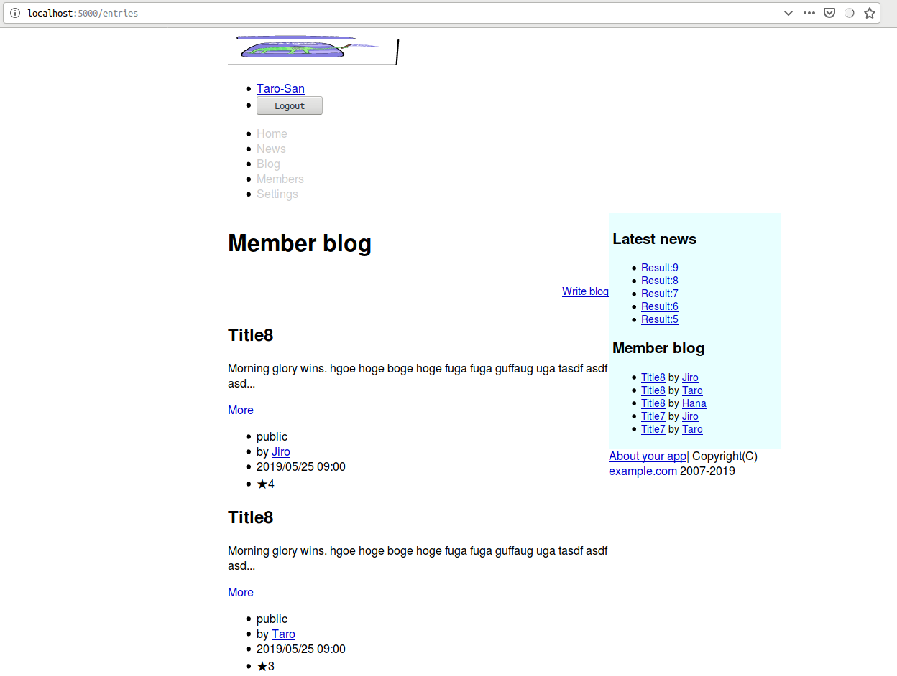
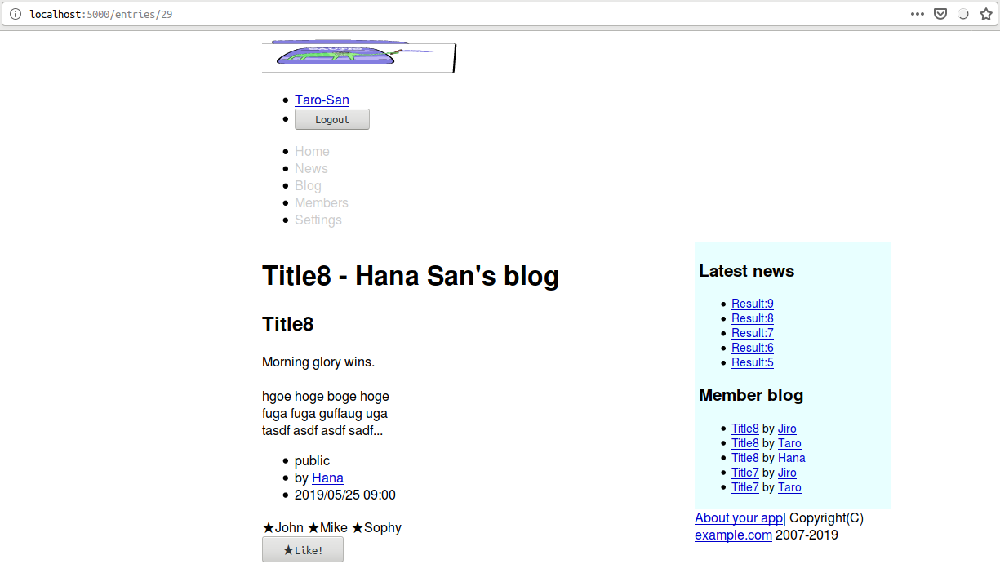
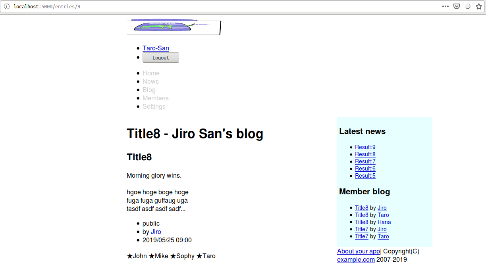
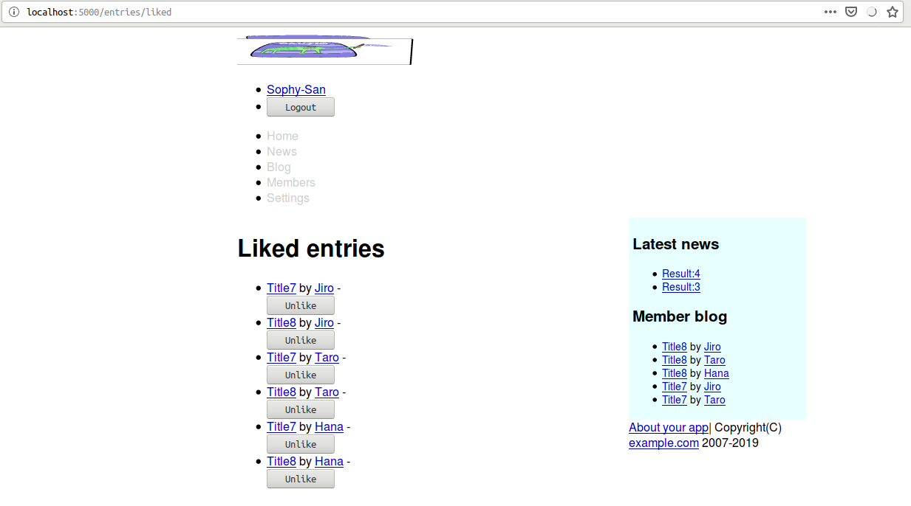

Caveman kills ruby on rails - Chapter 14
Meta info
対象読者
- Cavemanに於いて多対多のモデリングを行いたいCLer。
NOTE
筆者はcavemanを捨てsnoozeを使うようになった。 詳細はここに記してある。
Introduction
本稿は原著の各章をCommon Lispに翻訳するシリーズの第14章である。 本章ではCavemanにおける多対多のモデリングを修めていく。
14.1 Many to many relationship.
14.2 VOTE model
まずはモデルを定義。
(defclass vote()
((entry :col-type entry :initarg :entry :accessor entry-of)
(user :col-type user :initarg :user :accessor user-of))
(:metaclass mito:dao-table-class))テーブル作成。
(with-connection(db)
(mapc #'mito:ensure-table-exists '(user article entry entry-image vote)))マイグレーション。
(defun rebuild()
(with-connection(db)
(mapc #'mito:recreate-table '(user article entry entry-image vote)))
(seeds))ユーザを消すときにVOTEも消えるように。
(defmethod mito:delete-dao :before((user user))
(mito:delete-by-values 'vote :user-id (mito:object-id user))
(mito:delete-by-values 'entry :user-id (mito:object-id user)))エントリを消すときにVOTEも消えるように。
(defmethod mito:delete-dao :before((o entry))
(mito:delete-by-values 'vote :entry-id (mito:object-id o))
(mito:delete-by-values 'entry-image :entry-id (mito:object-id o)))ENTRYがUSERにとって投票可能か否か試験する述語。
(defun votablep(entry user)
(and entry
(not (mito:object= user (author-of entry)))
(null (mito:select-dao 'vote
(sxql:where (:and (:= :user-id (mito:object-id user))
(:= :entry-id (mito:object-id entry))))
(sxql:limit 1)))))シードデータを編集。
(defun seeds()
...
(let((user(mito:find-dao 'user :name name)))
(when user
(dotimes(x 10)
(let((entry(mito:create-dao 'entry
:user user
:title (format nil "Title~D" x)
:body body
:date-posted (local-time:timestamp- now (- 10 x) :day)
:status (nth (rem x 3)'("draft" "member-only" "public")))))
(when(find x '(7 8))
(dolist(name '("John" "Mike" "Sophy"))
(let((voter (mito:find-dao 'user :name name)))
(mito:create-dao 'vote :user voter :entry entry))))))))))
)))14.3 Like button.
Index
templates/entries/index.html
テンプレートを修正。
</li>
{% if votes %}
<li><span class="vote">★{{votes}}</span></li>
{% endif %}
</ul>テンプレートに引数を渡すようにルーティングを修正。
(defroute entries-index "/entries" (&key id)
(let*((author(when id
(mito:find-dao 'your-app.model::user :id id)))
(entries(entries :author author)))
(render "entries/index.html" `(:member ,author
:user ,(current-user)
:news ,(articles 5)
:entries ,(loop :for entry :in entries
:for votes = (mito:count-dao 'your-app.model::vote :entry-id (mito:object-id entry))
:collect (cons entry (and (< 0 votes)
votes)))
:blogs ,(subseq entries 0 5)
,@(roles)
:token ,(token)
))))
Show
templates/entries/show.html
テンプレートを修正。
{% include "entries/footer.html" %}
{% include "entries/votes.html" %}
{% endblock %}templates/entires/votes.html
部分テンプレートを作成。
<div class="vote">
{% for voter in voters %}
★{{voter.name}}
{% endfor %}
{% if votablep %}
<form action="/entries/{{entry.id}}/like" method="post">
<input type="hidden" name="AUTHENTICITY-TOKEN" value="{{token}}">
<input type="hidden" name="METHOD" value="post">
<input type="submit" value="★Like!">
</form>
{% endif %}
</div>引数をテンプレートに渡すようにルーティングを修正。
(defroute show-entry "/entries/:id"(&key id)
(with-authenticity-check(:logged-in)
(ensure-let((entry(mito:find-dao 'your-app.model::entry :id id)))
(let((entries(entries :limit 5))
(user(current-user)))
(render "entries/show.html" `(,@(roles)
:entry ,entry
:token ,(token)
:user ,user
:entries ,entries
:blogs ,entries
:news ,(articles 5)
:member ,(your-app.model::author-of entry)
:images ,(mito:retrieve-dao 'your-app.model::entry-image :entry-id id)
:voters ,(mapcar #'your-app.model::user-of
(mito:retrieve-dao 'your-app.model::vote :entry-id id))
:votablep ,(your-app.model::votablep entry user)
))))))
Like
ディスパッチャを以下のように定義。
(defroute ("/entries/:id/like" :method :post)(&key method id)
(method-case method
("post" (like-entry (acons "ID" id(lack.request:request-body-parameters ningle:*request*))))))postメソッドの本体を定義。
(defun like-entry(request)
(destructuring-bind(&key authenticity-token id &allow-other-keys)(request-params request)
(with-authenticity-check((:token authenticity-token):logged-in)
(ensure-let((entry(mito:find-dao 'your-app.model::entry :id id)))
(mito:create-dao 'your-app.model::vote :user (current-user) :entry entry)
(setf (gethash :notice ningle:*session*) "Voted")
`(,status-code:+see-other+(:location ,(format nil "/entries/~A"id)))))))
14.4
liked
templates/entries/liked.html
テンプレートを作成。
{% extends "layouts/app.html" %}
{% block title %}{% lisp (title! "Liked entries") %}{% endblock %}
{% block content %}
<h1>{% lisp (title!) %}</h1>
{% if entries %}
<ul>
{% for entry in entries %}
<li>
<a href="/entries/{{entry.id}}">{{entry.title}}</a>
by
<a href="/user/{{entry.author.id}}/entries">{{entry.author.name}}</a>
-
<form action="/entries/{{entry.id}}/like" method="post">
<input type="hidden" name="AUTHENTICITY-TOKEN" value="{{token}}">
<input type="hidden" name="METHOD" value="delete">
<input type="submit" value="Unlike">
</form>
</li>
{% endfor %}
</ul>
{% else %}
<p>No entries</p>
{% endif %}
{% endblock %}ルーティングを定義。
(defroute "/entries/liked"(&key)
(with-authenticity-check(:logged-in)
(let*((user(current-user))
(entries(mapcar #'your-app.model::entry-of
(mito:retrieve-dao 'your-app.model::vote :user-id (mito:object-id user)))))
(render "entries/voted.html" `(,@(roles) :news ,(articles 5) :blogs ,(entries :limit 5) :token ,(token)
:user ,user
:entries ,entries
)))))templates/entries/index.html
indexを修正。
{% if user %}
<ul class="toolbar">
<li><a href="/entries/new">Write blog</a></li>
<li><a href="/entries/liked">Liked bog</a></li>
</ul>
{% endif %}Destroy
ルーティングを以下のよう修正。
(defroute ("/entries/:id/like" :method :post)(&key method id)
(method-case method
("delete" (unlike-entry (acons "ID" id(lack.request:request-body-parameters ningle:*request*))))
("post" (like-entry (acons "ID" id(lack.request:request-body-parameters ningle:*request*))))))本体は以下のように定義。
(defroute unlike-entry("/entries/:id/like" :method :delete)(&key authenticity-token id)
(with-authenticity-check((:token authenticity-token):logged-in)
(ensure-let((entry(mito:find-dao 'your-app.model::entry :id id)))
(mito:delete-dao(mito:find-dao 'your-app.model::vote
:user-id (mito:object-id(current-user))
:entry-id (mito:object-id entry)))
(setf(gethash :notice ningle:*session*)"Unliked")
`(,status-code:+see-other+(:location "/entries/liked")))))
Summary
- リレーショナルデータベースで多対多の関連付けを行うときには、２テーブル間の結びつきを記録するための中間テーブルを別途用意します。
- 中間テーブルのためのモデルでは、各テーブルを:COL-TYPEで指定します。